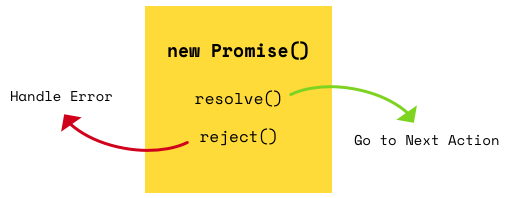
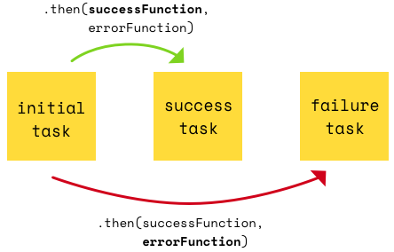
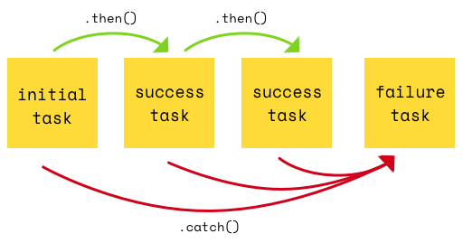
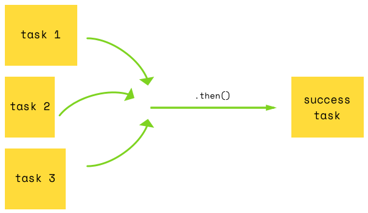

The Callback Hell
How to avoid the Callback Hell 1
Callback Hell, also known as Pyramid of Doom, or the Christmas Tree Effect,
is an anti-pattern seen in code made by programmers not skilled enough in asynchronous programming.
async1(function(){
async2(function(){
async3(function(){
async4(function(){
async5(function(){
....
});
});
});
});
The problem becomes even more obvious when we start to consider error handling.
Imagine the nightmare it would be, to debug the example if all methods where following the Node pattern:
msg(Err,Data) and if each methods on top of that could throw an exception.
How to avoid the Callback Hell 2
There are several ways to solve the problem, with Promises and async - await as the ones we will focus on
Promises are part of es2005 and TypeScript and Promises has been in use for a long time (via different libraries) as for example in JQuery and Angular
- Promises
- async - await
Promises
We have already used Promises (many times) with fetch(..)
Promises with fetch
//What does this request return? let p1 = fetch("http://api.icndb.com/jokes/random");//What does this request return? let p2 = p1.then((res)=>res.json());//What does this request return? let p3 = p2.then(data=>console.log(JSON.stringify(data)));p3.catch(err=>console.log("Error: "+ JSON.stringify(err)));
This is how we usually write it
fetch("http://api.icndb.com/jokes/random")
.then((res)=> res.json())
.then(data => console.log(JSON.stringify(data)))
.catch(err => {console.log("Error: "+err.message)
})
A JavaScript Promise represents the result of an operation that hasn't been completed yet, but will at some undetermined point in the future
Promises in "Words"
So what is a JavaScript Promise
A promise is an object that may produce a single value some time in the future:
- Either a resolved value
- Or a reason that it’s not resolved (e.g., a network error occurred)
A promise may be in one of 3 possible states:
- Pending: When the final value is not available yet
- Fulfilled: When and if the final value becomes available
- Rejected: If an error prevented the final value from being determined.
Promise users can attach callbacks to handle the fulfilled value or the reason for rejection.
Promises in es2005
Promises provide us with a way to perform asynchronous calls sequentially so:
This code
async1(function(){
async2(function(){
async3(function(){
async4(function(){
async5(function(){
....
});
});
});
});
will look "something" like this
async1 then(async2). then(async3). then(async4). then(async5). catch(errorHandlingForAll); });
The single error handler will handle all errors that could occur (an error will halt the flow)
Creating es2005 Promises
A Promise is created using the Promise Constructor. This accepts a function with two arguments (resolve & reject) as its only parameter. The Promise will then either call resolve or reject
Promises are only really useful for asynchronous calls, so the example below uses a timer as a simple way to get async behaviour
var p = new Promise((resolve, reject)=> {
setTimeout(()=>{//To demonstrate an async call
var ok = true;//Simulates the result of the operation
if (ok) {
resolve("Msg from Promise");
}
else {
reject("UPPPPs");
}
},SOME_DELAY);
});

The promise constructor takes as its argument a function, called the "executor function". This function should take two functions as parameters. The first of these functions (resolve) is called when the asynchronous task completes successfully and returns the results of the task as a value. The second (reject) is called when the task fails, and returns the reason for failure, which is typically an error object.
Creating promises for the examples
To simply some of the examples, we will create a promise as sketched below:
let promiseFactory = function(msg,delay) {
return new Promise((resolve, reject)=> {
setTimeout(()=> { //To demonstrate an async call
var ok = true; // simulates the result of the operation
if (ok) {
resolve(msg);
}
else {
reject("UPPPPs");
}
}, delay);
});
};
let p = promiseFactory("Msg from Promise",SOME_DELAY);
Promise States
A Promise is in one of these states
- pending: Hasn't fulfilled or rejected yet
- fulfilled: The action relating to the promise succeeded
- rejected: The action relating to the promise failed
- settled: Has fulfilled or rejected.
A pending promise can either be fulfilled with a value, or rejected with a reason (error).
When either of these happens, the associated handlers queued up by a promise's then method are called.
Using es2005 Promises
We call the promise function by calling the .then(..) function.
Depending on whether the promise was fulfilled or rejected, either the first or the second callback will be called
p.then(data=> console.log(data),
err => console.log(err)
);
//OR a bit clearer, using the catch method
p.then(data=> console.log(data));
p.catch(err=> console.log(err));
//Or using chaining
p.then(data=> console.log(data)).
catch(err=> console.log(err));

Chaining es2005 Promises
.then() always returns a promise, which enable us to chain method calls
let allResults = [];
var p1 = makePromise("MsgPromise1",8000);
p1.then(data => {
allResults.push(data);
return makePromise("MsgPromise2",7000);
}).then(data =>{
allResults.push(data);
return makePromise("MsgPromise3",1000);
}).then(data => {
allResults.push(data);
return "done: ";
}).then(data=>{
console.log(data+allResults);
}).catch(error => {
console.log("ERROR: "+error);
});
This example executes all async calls:
- Synchronous
- In the order they are started (independent on the timer value)
- Handles all errors in centralized place
When will we see the final result?
Chaining Promises 2
Remember: .then() always returns a promise, which enable us to chain method calls
p1.then(data => {
//Returns a specific promise
return makePromise("MsgPromise2",7000);
}).then(data => {
//Will be settled with a Promise
return "done: ";
}).then(..);
}).catch(..);

How the Promise P returned by then() is settled depends on what its callback does:
- If it returns a Promise (as in the first then), the settlement of that Promise is forwarded to the next in line
- If it returns a different value, that value is used to settle the Promise.
- If throws an exception then P is rejected with that exception.
Executing Promises in parallel
Promise.all(..)
If your Promises does not rely on the result from a previous promise, and the order of the results does not matter, we can execute the task in parallel
let promises=[promiseFactory("MsgFromP1",7000),
promiseFactory("MsgFromP2",6000),
promiseFactory("MsgFromP3",5000)];
Promise.all(promises).then((data)=>{
console.log(data);
}).catch(..);
//Will print this:
//['MsgFromP1', 'MsgFromP2', 'MsgFromP3']

Promise.all() enables us to be notified once all results are ready
(like when we did join() on a number of threads in Java).
- Its input is an Array of Promises
- It outputs a single Promise that is fulfilled with an Array of the results.
References
Async functions
async/await
async/await simply gives a synchronous feel to asynchronous code.
It's a very elegant form of syntactical sugar
Async functions
- Async/await is a new way to write asynchronous code.
Previous options for asynchronous code are callbacks and promises -
Async/await is built on top of promises.
It cannot be used with plain callbacks (but you have learned to wrap a callback-design, inside a promise-based implementation)
- Async/await is, like promises, non-blocking
-
Async/await makes asynchronous code look and behave a little more like synchronous code
This is where all its power lies
-
Async functions are available with:
- Node (LTS)
- React (via Babel) in create-react-app applications
- React Native (via Babel) in create-react-native-app applications
The "syntactic" difference
In what order do we see the log statements below?
let promise = promiseFactory("hello",1000);
console.log("before");
promise
.then(msg=>console.log("Result: "+msg))
.catch(err=>console.log("Error: "+err.msg));
console.log("After");
In what order do you expect to see the log statements below
async function demo1(){
let p = promiseFactory("hello",1000);
console.log("before");
const msg = await p;
console.log("After");
console.log("Result :"+msg);
}
Syntax
async function f(){
let p = promiseFactory("hello",1000);
const msg = await p;
console.log("Result :"+msg);
}
//Or as an arrow function
const fa = async() => {
let p = promiseFactory("hello",1000);
const msg = await p;
console.log("Result :"+msg);
}
-
Observe the keyword async before the functions.
The await keyword can only be used inside functions defined with async - The statement: await p; waits until the promise resolves (after a second in this example)
Error Handling
With Async functions we can handle both synchronous and asynchronous errors with the same familiar construct:
try/catch.
const faError = async () => {
try {
let p = promiseFactory("hello", 1000);
const msg = await p;
console.log("Result :" + msg);
} catch (err) {
console.log("Error: " + err.message);
}
}
Intermediate values
In situations where the result from one promise is used as input to the next, the code becomes much more readable (sequential like) with Async functions.
If you did the getPlanetforFirstSpecieInFirstMovieForPerson() you must really appreciate this version :-)
async function getPlanetforFirstSpeciesInFirstMovieForPersonAsync(id) {
try {
const n = await fetch(URL + id).then(res => res.json());
const f = await fetch(n.films[0]).then(res => res.json());
const s = await fetch(f.species[0]).then(res => res.json());
const p = await fetch(s.homeworld).then(res => res.json());
return "Name: " + n.name + ", Title: " + f.title + ", Specie: " + s.name + ", Planet: " + p.name;
}
catch (err) {
console.log(err);
}
}
Promises in serial with async/await
In the previous example, the HTTP-requests had to be executed sequentially since the result from one was used as input for the the next.
For the example below however, this introduces an unnecessary performance overhead since the second request does not depend on the first
async function serial(){
const res1 = await fetch("https://swapi.co/api/people/1").then(r=>r.json());
const res2 = await fetch("https://swapi.co/api/people/2").then(r=>r.json());
console.log(res1.name);
console.log(res2.name);
}
Promises in parallel with async/await
Remember; async/await is "just" syntactic sugar around promises so:
any async function returns a promise implicitly
You can store this, for later reference, and use either; .then or await on it
async function parallel(){
//These requests execute in parallel (don't use await here)
const promise1 = await fetch("https://swapi.co/api/people/3").then(r=>r.json());
const promise2 = await fetch("https://swapi.co/api/people/4").then(r=>r.json());
//Now use await
const res1 = await promise1;
const res2 = await promise2;
console.log(res1.name);
console.log(res2.name);
}
Debugging
Promises are notoriously know for being hard to debug
With async/await you can step through your code, exactly as if it had been normal synchronous code
Make sure to do the debugging part on the exercises!